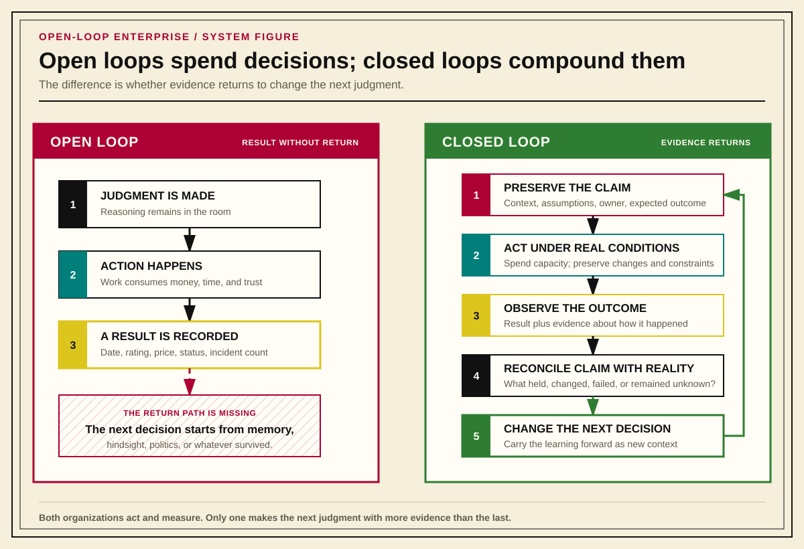
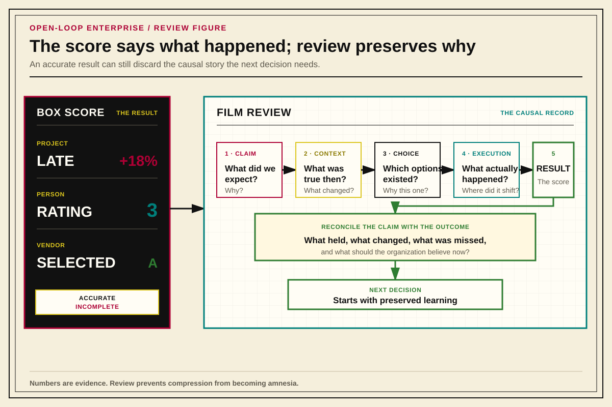

Closed-Loop Organization / Chapter 1
The Open-Loop Enterprise
Why organizations preserve outcomes while losing the claims, context, and evidence needed to learn from them.
Record the claim, observe reality, reconcile the difference, and make the next decision with more evidence than the last.
Thesis
Most enterprises run open-loop. They make requests, forecasts, hiring decisions, architecture calls, vendor selections, and performance judgments, and then they let the reasoning behind those calls evaporate. The decision is made, the moment passes, and the organization moves on carrying only the outcome: a ship date, a rating, a purchase, an incident count. It keeps no durable record of what it expected to happen, why, or what it would have accepted as proof that it was wrong.
An open loop is not a company that lacks opinions. It is a company that cannot tell its own good judgment from its own luck, because it never wrote down enough to check.
Closing the loop means five things, done as a matter of course rather than as a special project:
- Record the judgment or prediction when it is made, not after the fact.
- Preserve the context, assumptions, constraints, and expected outcome that produced it.
- Route the resulting artifact somewhere it must actually be read.
- Reconcile the original claim against what actually happened.
- Feed what was learned back into the next decision.
None of these steps is exotic. Most organizations already do some version of each one, just badly: informally, inconsistently, or only after something goes wrong enough to force a postmortem. The rest of this book is an argument that the same five-step loop belongs in how work gets written, how architecture gets decided, how people get coached and promoted, how vendors get selected, and how services get retired, and that an organization unwilling to close the loop in small things will not manage it when the stakes are high.

Why This Book Makes Use of Sports Metaphors
A correct explanation that puts the reader to sleep before the causal structure becomes visible has not done its job. Systems theory, feedback loops, and evidentiary reasoning are simple ideas once you see them, but “once you see them” is exactly the problem: a reader has to get past the vocabulary first.
Sports solve that problem because they make systems concrete before they make them technical. The goal is visible. The constraints can be explained in a a sentences. Preparation and execution are different activities performed by different people. Roles carry real decision rights, not just titles. Feedback is immediate. Failure has consequences a reader has felt, at least at a smaller scale, in their own body. Nobody needs a graduate seminar to understand at a visceral level the disappointment a baseball pitcher probably feels after throwing a pitch that resulted in a walk-off grand slam to end game 7 of the World Series. All you need to know is that it’s the pitcher’s job to prevent the other team from getting points, a grand-slam is 4 points, and the World Series is what crowns that year’s champion for the MLB (the highest level at which one can play baseball competitively). We can all empathize with seeing the most well-intended plans go terribly wrong, even if we never experience a moment quite that dramatic.
That is the job sports analogies aim to do in this book: make the organizational pattern easier to see. It is not used to prove anything. A reader who has never watched a football game and does not care to should still be able to follow every argument in this book using ordinary business language alone: the analogy is a way in, not a load-bearing wall.
Three sports do most of the work here, each for a different reason:
- Football makes operating context visible: field position, down, distance, clock, score, personnel, risk posture. It shows how a plan survives contact with reality only because qualified people are trusted to adjust it live.
- Baseball is the cleanest example of a metrics-heavy operating model. Almost every efficiency system dreams for its metrics to be as strong and durable as Sabermetrics: effectively, Moneyball is the desired end-state of any observability system, which makes it useful both as a model for structured development pipelines, and as a warning about how attractive clean numbers become when the underlying work is actually much messier than a box score.
- Boxing makes individual preparation under pressure visible: the difference between a person who has drilled the mechanics and a person who has only been told to be brave.
Other sports, and other domains entirely, earn a place in this book only when they make a point clearer than these three already do. The rule is the same every time: use the analogy when it makes a reusable organizational pattern legible, and drop it the moment it would require the reader to already know something about the sport to follow the argument. A metaphor that needs a glossary has stopped paying its way.
It is also fine if a sports analogy does not land for a particular reader. The goal underneath all of this is cross-domain pattern recognition, not sports appreciation. If someone reads a football comparison and thinks “this is really about theater production” or “this maps better to a video game raid” or simply “this metaphor is wrong, but I see the structure it’s pointing at,” the analogy has done its job. The point was never the game: the point was getting the reader to notice the same shape, or pattern, showing up in an unfamiliar place.
Where “Closed Loop” Comes From
The closed-loop language in this book did not start in a systems-engineering textbook, nor anywhere near technology or organizational theory. It started with a discussion of the one system with which every reader of this book will undoubtedly be familiar: the human body. While giving a trainee a lifting cue, Mike Mentzer described the human body as a closed hydraulic system: approximately, the pressure created in one part of the body necessarily shows up somewhere else in the system. That wording is a remembered paraphrase, not a verified quotation: the origin of an idea, not a citation to defend.
The specific example was a heavy leg press. Gripping the handles as hard as possible, clenching muscles that had nothing to do with moving the weight, does not add force to the lift. It spends a finite resource on the wrong target while advertising the appearance of effort. The system does not care how hard the lifter grips the handles; it only cares how hard the legs are pressing against the sled.
Organizations do the equivalent constantly. A manager forced to carry a normal individual-contributor workload on top of managing people is not “doing more” in any way that helps either job; the effort is being spent somewhere other than the target, and something else in the system absorbs the pressure: unfunded management, unfunded execution, or a person quietly failing at both while getting blamed for prioritization. Hidden work, role compression, process added without removing anything, and activity performed to look busy rather than to move an outcome are all the same failure wearing different clothes: local effort spent on something other than the thing that was supposed to move.
That is the only piece of the idea this book needs up front. It recurs everywhere in what follows: the organization is one system, not a collection of independent boxes, and pressure applied in one place has to come from, or go to, somewhere else.
Film Review: The Practice That Closes the Loop
If there is one habit that best explains what closing the loop actually looks like in practice, it is this one:
Coaches never skip film review.
The point is not that every loss hides a clever tactical lesson waiting to be discovered. Sometimes a team gets dismantled because it had a bad day, and the film shows exactly that and nothing more elegant. The review still happens, because the team is not made only of tactics. Memory, confidence, preparation, and the felt experience of losing control all affect the next performance, and none of that is directly visible in the final score.
The box score says what happened, and the film shows how it happened: which read was missed, where the structure broke down, when execution stopped matching intent, what changed on the field, and how it felt to lose control of a game the team thought it had. A team that only ever looks at the box score is optimizing for a number it does not understand.
The organizational equivalent of film review is reconciliation after a decision or an outcome. A budget variance, a project status, a performance rating, an uptime number, a vendor score: every one of these is a box score. Each can be perfectly accurate and still be radically incomplete, because the score preserves the result and discards the causal story: the original claims, the assumptions that seemed reasonable at the time, the constraints nobody chose, the decisions that were actually available, and the evidence the organization had and ignored.
This is the failure mode worth naming precisely, because it gets mistaken for its opposite:
The bean-counter failure is not the use of numbers. It is confusing the box score with the game.
Nobody who reviews film is anti-statistics. A completion percentage, a yards-per-carry average, and a turnover margin are all useful. What film review refuses to accept is the idea that the number is the whole story. Imagine a football quarterback throwing a ball that hits his receivers hands uncontested, but the receiver does not catch the ball, instead, he tips it into the air and a defender catches it: the stat sheet says the quaterback threw an interception, the film tells a very different story. An organization that tracks cost, schedule, and rating with genuine rigor, but never returns to the decisions and conditions that produced those numbers, has kept the score and thrown away the film.

The Box Score Across the Enterprise
The same substitution of score for film happens in every function this book touches. Each domain below has an obvious number that gets recorded, and a much less convenient record that usually does not survive the review, if a review happens at all.
| Domain | Box score | Film the organization usually discards | Loop-closing review |
|---|---|---|---|
| People | Rating, promotion, resignation, or termination | Assignments, coaching, constraints, hidden work, and the evidence actually available at the time | Calibration and development reconciliation |
| Projects | On time, late, over budget, or canceled | Original forecast, assumptions, tradeoffs, changing conditions, and any reusable capability the work produced | Benefits-realization or post-implementation review |
| Vendors | Selected vendor, implementation date, purchase price | Claims made, alternatives rejected, proof conditions, accepted risks, and operational burden | Claim and acceptance reconciliation |
| Architecture | Shipped design, incident count | Problem framing, expected axes of change, complexity exported to other teams, and decision boundaries | Architecture decision review against live operation |
| Risk | Incident, avoided loss, or no visible event at all | Who noticed the risk, what evidence existed, how it was routed, and why action was or was not taken | Significant-risk review |
| Hiring | Hired, rejected, time to fill, later performance | CV context, interview claims, work-sample evidence, and the assumptions made about what the person would need after hire | Hiring-decision and post-hire reconciliation |
Take the people row on its own for a moment, because it is the one most likely to be treated as settled by the number. A rating looks like a fact. It is really a compressed opinion about a much longer record: what the person was actually assigned, what they were coached on and when, what was happening around them that made a stretch assignment harder or easier than it looked from outside, and what evidence existed that never made it into the file. Two people can receive the same rating for entirely different reasons, and an organization that only keeps the rating has no way to tell which reason applies to which person the next time a promotion, a layoff, or a difficult reassignment is on the table.
Or take projects. “Canceled” reads as a failure in the box score and often is treated as one in the room where headcount gets discussed. But a canceled project can still leave behind reusable automation, a clearer picture of a real constraint, a relationship worth having, or a sharper understanding of a failure mode the organization would otherwise have discovered in production. The box score has no column for that. Only a review that goes back to the original forecast and asks what actually changed can tell the difference between waste and a drive that failed to score but improved field position anyway.
The pattern repeats down every row in the table. The box score is not wrong. It is just not enough, and an organization that treats it as enough has quietly decided that the causal story behind its own decisions is not worth keeping.
A Framework, Not an Answer Key
Everything that follows is an opinion about how to apply this loop. It is a well-considered opinion: the product of sixteen years and seven months of work, along with formal study of the methodologies referenced throughout this book. That experience earns the argument a hearing. It does not turn the argument into a universal implementation specification.
The ambition is universal applicability at the level of mechanism, not identical execution. Anyone who has ordered a “one-size-fits-all” item and received what is clearly the children’s version already understands the problem with the label. Organizations differ in size, authority, regulation, risk, capability, and tolerance for ceremony. The form, review body, cadence, or metric that closes a loop in one environment may create waste or false confidence in another. What should survive the translation is the causal obligation: preserve the claim, identify the owner, define the evidence path, and return to the decision when reality has had a chance to answer it.
When a reader finds a gap, an oversight, or a difficult local case, the tempting questions are: “What specific thing should I do here, Mr. Dishpit?” or “Which KPIs will make my organization successful if I track them?” Those questions ask an external answer to replace the local judgment the organization is responsible for recording. A metric imported without the decision it is supposed to inform becomes another box score. A prescribed step copied without knowing which risk or assumption it controls can open a new loop while making the organization feel governed.
Ask instead: Does this create a new loop? What would close that loop before the project goes live? Who owns the claim, what evidence would change the decision, and when must somebody look at it? The book can supply patterns, examples, and warnings. It cannot absolve the reader’s organization of translating them into its own operating conditions.
That is not permission to improvise without discipline. Adaptation should leave behind its own reasoning: why the local implementation differs, which consequence it controls, what proof will count, and when the choice will be reviewed. The standard is not whether an organization copied the example. The standard is whether it can later reconcile the decision it actually made.
The Rule
Everything in this book applies one rule, stated once here so it need not be restated every time it recurs:
Every important decision needs a durable claim, an owner, an expected outcome, an evidence path, and a review point.
A written record produced by that rule is not automatically bureaucracy. It is the answer key the organization needs when it eventually sits down to watch its own film. It will need to, because judgment is unavoidable. Every hire, every architecture call, every performance rating, every vendor selection is somebody’s judgment call, made with incomplete information under real constraints. That is not a flaw to be engineered away. The flaw is judgment that goes unrecorded, because unrecorded judgment cannot be reconciled against what actually happened. It can only be defended, forgotten, or repeated.
The chapters that follow apply this same rule to a different part of the enterprise each time: how work gets written before it gets built, how architecture commitments get framed before they get made, how process improves without becoming theater, how people get coached and developed against evidence instead of impressions, how vendors get selected and held to their own claims, and how services get retired instead of merely abandoned. The domain changes. The loop does not.